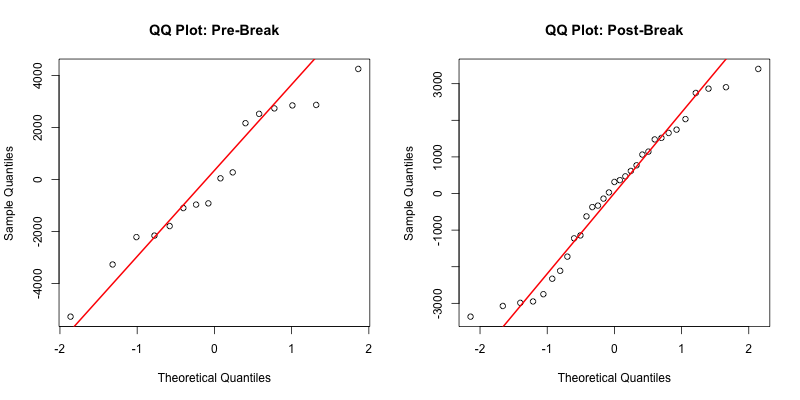
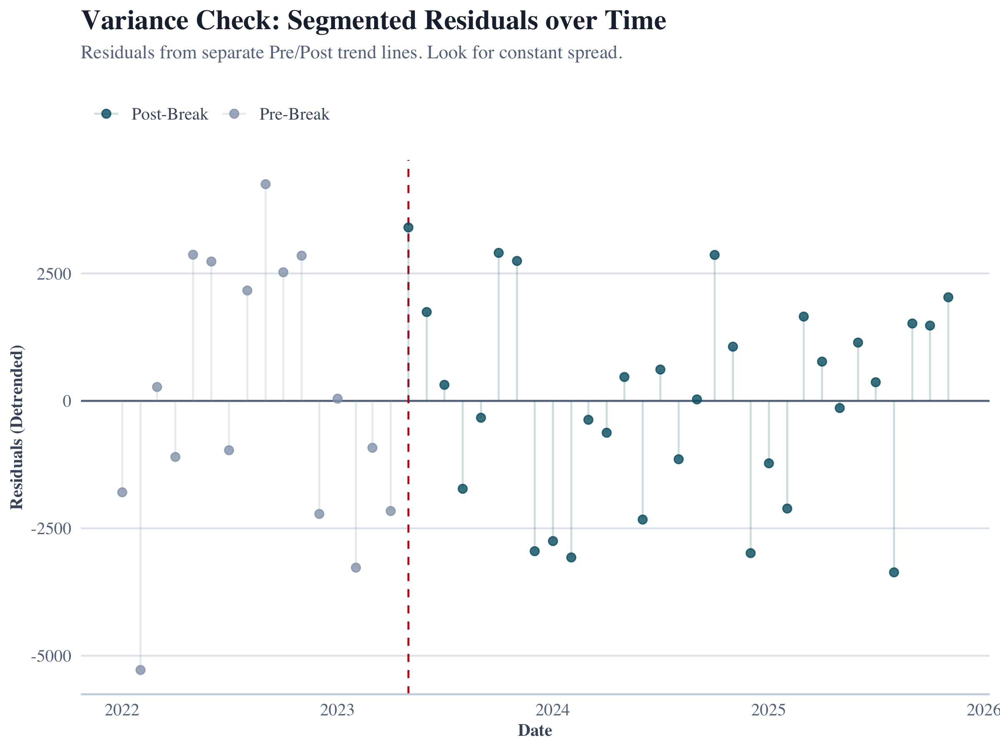
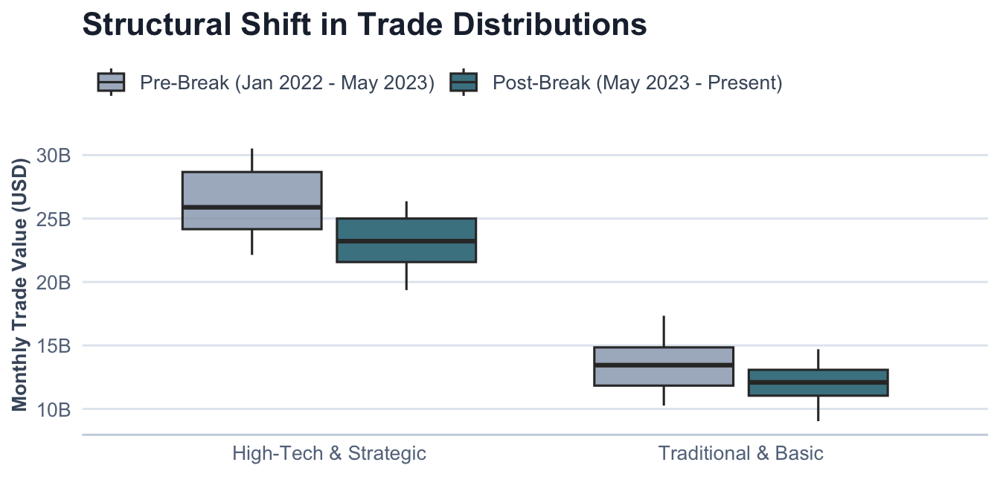
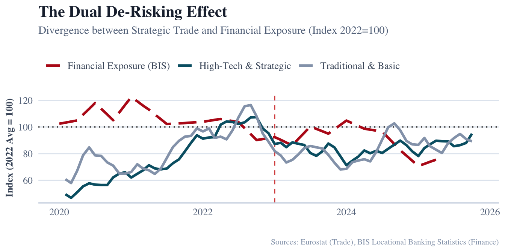
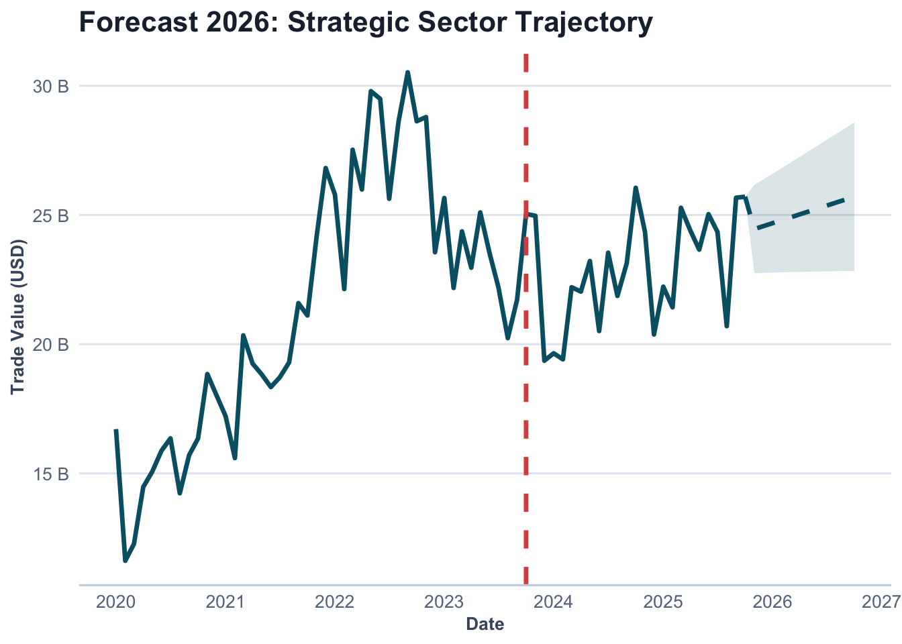

| Sector | Mean_Monthly | SD | Min | Max |
|---|---|---|---|---|
| High-Tech & Strategic | 23.33 | 3.29 | 15.59 | 30.52 |
| Traditional & Basic | 12.26 | 1.90 | 8.73 | 17.34 |
The Resilience Paradox: Mapping EU-China Strategic Trade and Financial Fragmentation
An Empirical Analysis of the ‘De-risking’ Strategy (2020–2026)
Abstract
This study quantifies the impact of the European Union’s “de-risking” strategy on trade and financial flows with China. Using high-frequency data from Eurostat and the BIS, we identify a definitive structural break in strategic trade sectors occurring in May 2023, while traditional trade remains stable. Our results indicate a “dual-track” reality where supply chain fragmentation is accompanied by a paradoxical rise in financial exposure, suggesting a shift toward localization strategies.
Introduction
The evolution of EU-China economic relations has undergone a fundamental departure from the Wandel durch Handel (“change through trade”) paradigm toward a strategy of “de-risking.” This shift is primarily aimed at correcting a trade deficit that reached €304.5 billion by 2024 and mitigating the risks of “coercive leverage” in critical supply chains (Vandermeeren, 2024).
This strategic pivot aligns with the broader academic discourse on “Weaponized Interdependence” (Farrell & Newman, 2019), which posits that asymmetric network structures—once seen as sources of efficiency—can be leveraged for strategic advantage. Consequently, the European Union has moved to reclaim economic security through state intervention, a regulatory expansion that Bradford (2020) describes as the “Brussels Effect” applied to geoeconomic defense.
The Security-Trade Nexus
Despite the clear political shift toward strategic autonomy, there remains a gap in the empirical literature regarding whether these policy objectives have successfully translated into a measurable divergence in trade flows. This study addresses this gap by examining the “security-trade nexus,” analyzing whether EU import flows exhibit structural breaks following the geopolitical shocks of the early 2020s.
We hypothesize a “dual-track” geoeconomic reality:
Market Logic Track: Traditional, low-value-added sectors governed by cost efficiencies should remain stable.
Security Logic Track: High-tech industries—subject to the EU Chips Act, foreign investment screenings, and export controls—are expected to show significant fragmentation (McNamara, 2023).
Theoretical Framework
Contextual Background: COVID-19 and Volatility
The empirical analysis in this study must be interpreted against the backdrop of exceptional volatility in global trade following the COVID-19 shock. Between 2020 and 2021, international trade experienced abrupt contractions followed by rapid rebounds driven by supply chain disruptions and fiscal stimulus.
To address this distortion, our analytical framework treats the COVID period not as a structural break, but as a noise-generating exogenous shock. Consequently, the baseline for structural break testing is shifted forward, with formal econometric testing beginning in January 2022. This ensures that the identified break reflects policy-driven geoeconomic change rather than pandemic-related statistical artifacts.
Linking Theory to Empirical Strategy
This framework operationalizes the theory of “Weaponized Interdependence” (Farrell & Newman, 2019), which argues that advanced economies are transitioning from market-based interdependence toward selective risk mitigation.
The distinction between “surgical de-risking” and “generalized decoupling” is central to our hypothesis. As noted by Dadush (2023), effective de-risking should not manifest as a broad-based exit, but rather as targeted diversification in sensitive sectors. If de-risking is genuinely selective, structural breaks should be significantly stronger in strategic sectors than in traditional trade flows. In this sense, the Intensity Ratio (the difference in F-statistics between high-tech and traditional sectors) serves as a quantitative proxy for the reassertion of state power over economic interdependence (McNamara, 2023).
Methodology
To empirically evaluate the manifestation of “de-risking,” this study employs a quantitative, sectoral structural break analysis. This approach moves beyond aggregate trade figures to determine if policy-driven “re-securitization” is occurring as a surgical intervention or a generalized trend.
Data Acquisition and Categorization
The empirical foundation rests on a high-frequency longitudinal dataset (2020–2025) constructed through automated API retrieval from Eurostat (COMEXT) (Eurostat, 2026) and the Bank for International Settlements (BIS) (Bank for International Settlements, 2026). Trade flows are disaggregated using the Standard International Trade Classification (SITC) Revision 4:
Treatment Group (High-Tech & Strategic): Comprising SITC 5 (Chemicals) and SITC 7 (Machinery/Transport). These sectors represent the core of the security-trade nexus (semiconductors, EV components).
Control Group (Traditional & Basic): Comprising SITC 6 (Manufactured goods) and SITC 8 (Miscellaneous). These sectors serve as a baseline for market-driven trade.
Econometric Framework
The primary analytical instrument is the Chow Test (Chow, 1960), a standard in econometric literature for identifying structural breaks in time-series data. The model tests for a break point in May 2023, representing early geoeconomic shifts prior to the formal Economic Security Strategy (European Commission, 2023).
To ensure robustness, we filter for pandemic volatility (starting analysis in Jan 2021) and use the Control Group to rule out generalized macroeconomic downturns.
Assumption Verification
To ensure the statistical validity of the Chow Test, we performed diagnostic checks on the residuals of a Segmented Model (splitting the data into Pre- and Post-Break periods). This approach correctly accounts for the structural shift, preventing false positives where a “kinked” trend might otherwise appear as non-normal error distribution.
Normality (Confirmed): The Shapiro-Wilk test on the segmented residuals yielded a value of W = 0.9769 with a p-value of 0.4698. Since \(p > 0.05\), we fail to reject the null hypothesis, confirming that the residuals are normally distributed once the structural break is accounted for.
Figure 1: Segmented QQ Plot Autocorrelation: We assessed the Autocorrelation Function (ACF) separately for Pre- and Post-break periods to rule out serial dependence bias in either regime.

Homoscedasticity: Visual inspection of residuals over time confirmed constant variance (homoscedasticity) before and after the structural break.
Figure 2: Segmented Variance Check
Results
Descriptive Statistics
Before assessing structural breaks, we examine the baseline characteristics of trade flows in the post-pandemic era.
Structural Break Analysis
The model identified a definitive structural break occurring in May 2023.
Treatment Group (Strategic): Yielded a highly significant F-statistic of 21.8 (\(p < 0.0001\)).
Control Group (Traditional): Showed a significantly weaker response with an F-statistic of 5.52.
The timing of this break (May 2023) aligns with the ‘Signaling Shockwave’ of the G7 Hiroshima Summit, occurring just prior to the formal announcement of the 2023 Economic Security Strategy. This indicates a distinct anticipatory effect, where market fragmentation occurred as a proactive reaction to geopolitical signaling and corporate risk recalibration, ahead of the formal policy shift.
The Intensity Ratio of 3.9x further validates that these shifts specifically targeted the high-tech/strategic nexus while leaving traditional trade relationships relatively intact.
Visualization of Distributions
To visualize this shift beyond abstract statistics, we examine the distribution of monthly trade values (Figure 3).

Discussion
The Finance-Trade Nexus
Recognizing that geoeconomics is inherently multi-disciplinary, we integrate trade data with financial flows from the BIS. The results reveal a “Localization Paradox.”

As shown in Figure 4, the Wandel durch Handel paradigm has not merely paused; it has been replaced by a “dual-track” reality. While traditional goods (Grey Line) continue to follow the logic of comparative advantage, high-tech sectors (Blue Line) have decoupled.
Crucially, Banking Exposure (Red Dashed Line) shows a substitution effect. The divergence suggests that while EU firms are importing fewer high-tech goods, they may be increasing capital exposure to maintain market presence—an “In China, For China” strategy that mitigates supply chain risk while increasing financial risk.
Future Trajectory (2026)
Based on the post-break trend (May 2023–Present), our linear model projects a continued stabilization at lower levels rather than a rebound.

Limitations
Despite its strengths, this framework faces limitations intrinsic to the available data. First, SITC categories remain relatively broad; while SITC 5 and 7 cover strategic goods like semiconductors, they also contain non-strategic components. This aggregation may mask variations at finer product classifications.
Second, while the structural break aligns with shifts in the security-trade nexus, break tests cannot definitively prove causality without controlling for all possible confounding variables.
Third, BIS financial data capture banking exposure but do not fully cover Foreign Direct Investment (FDI) or equity flows. Consequently, the “financial substitution” effect observed may actually be understated if firms are using non-banking channels to fund localization strategies.
Conclusion
The data demonstrates that “de-risking” is a measurable, sector-specific phenomenon. The structural break in May 2023 validates that the European market began fragmenting in direct response to the formal 2023 strategy, rather than well before it.
This distinction is vital for policymakers: economic security tools work, but they function as “shocks” that sever trade integration abruptly. As the EU looks toward 2027, the challenge will be maintaining this “surgical” precision without sliding into broader protectionism that could stifle the very innovation it seeks to protect, echoing concerns raised about the broader costs of geoeconomic fragmentation (International Monetary Fund, 2023; McNamara, 2023).
References
Bank for International Settlements. (2026). Locational banking statistics. BIS. https://stats.bis.org
Bradford, A. (2020). The brussels effect: How the european union rules the world. Oxford University Press.
Chow, G. C. (1960). Tests of equality between sets of coefficients in two linear regressions (Vol. 28, pp. 591–605). Econometrica.
Dadush, U. (2023). De-risking is not decoupling (Policy Brief 10). Bruegel.
European Commission. (2023). Joint communication on a european economic security strategy. European Union.
Eurostat. (2026). Euro area trade by SITC product group. European Commission. https://ec.europa.eu/eurostat
Farrell, H., & Newman, A. L. (2019). Weaponized interdependence: How global economic networks shape state coercion. International Security, 44(1), 42–79.
International Monetary Fund. (2023). Geoeconomic fragmentation and foreign direct investment [World Economic Outlook, Chapter 4]. IMF.
McNamara, K. R. (2023). Transforming europe? The EU’s industrial policy and geopolitical turn. Journal of European Public Policy, 31(9), 2371–2396.
Vandermeeren, F. (2024). Understanding EU-china economic exposure. European Economy Brief, (004).